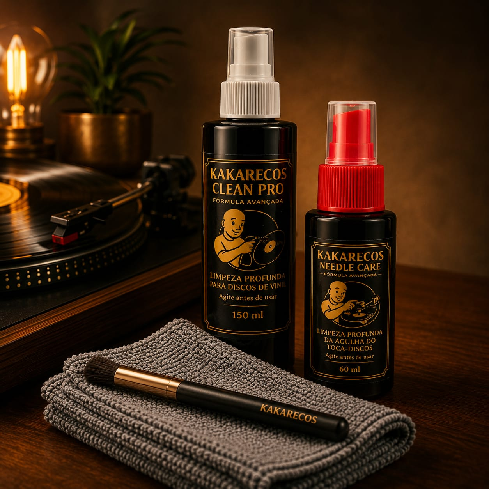
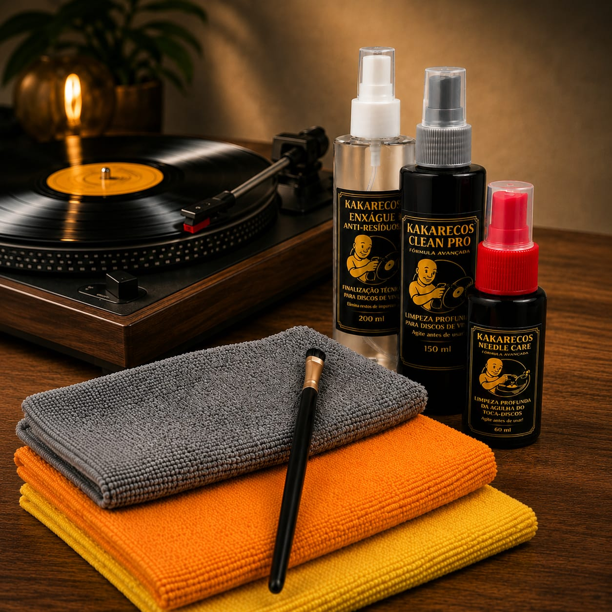
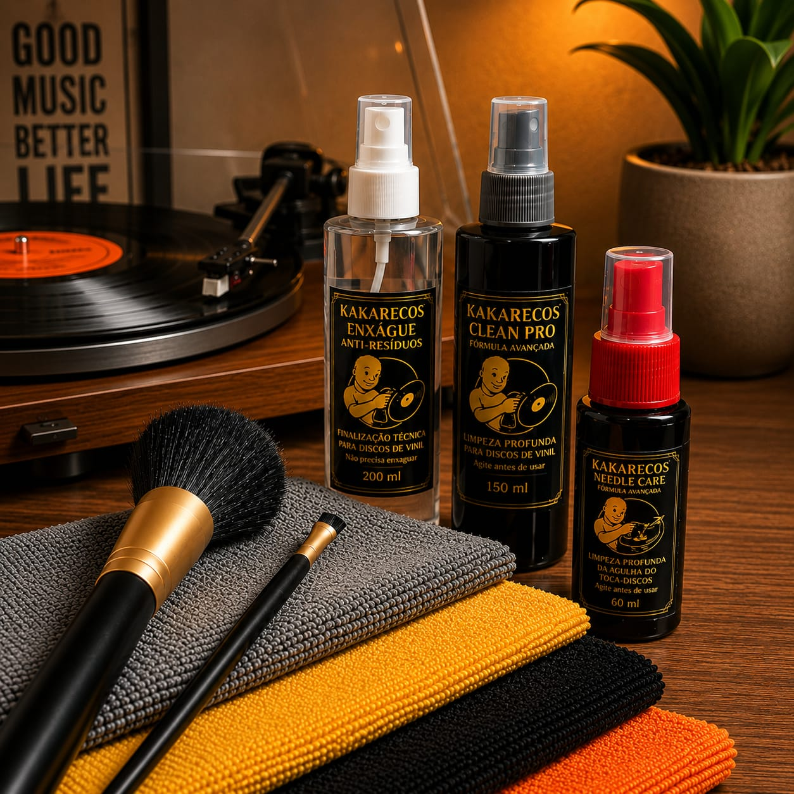

Sulcos livres de resíduos invisíveis
Removemos poeira fina, gordura, fungos e minerais que permanecem mesmo em discos aparentemente limpos.
Para quem leva o vinil a sério.
Fórmulas profissionais que removem resíduos, reduzem estática e preservam discos e agulhas sem agredir os sulcos.
Fórmulas Conservação fonográfica sem improvisos
Remove Resíduos invisíveis e contaminações do sulco
Reduz Estática e interferências na reprodução
Preserva A integridade sonora do seu acervo
+1.500 colecionadores atendidos
100% focado em conservação fonográfica
Sem silicone, ceras e detergentes domésticos
Kits profissionais · A partir de R$113
Conhecer os kits— Sobre nós
A Kakarecos do Careca nasceu da busca por preservar aquilo que faz o vinil ser diferente: dinâmica, textura e presença sonora.
Desenvolvemos fórmulas voltadas para conservação fonográfica, pensadas para remover resíduos invisíveis dos sulcos sem agredir discos, agulhas ou prensagens delicadas.
Não trabalhamos com soluções improvisadas ou limpeza doméstica. Cada etapa do processo foi construída para quem entende que preservar um LP vai muito além de deixar a superfície brilhando.
Hoje nossos kits ajudam colecionadores de todo o Brasil a manter seus acervos limpos, protegidos e prontos para décadas de audição.
Não vendemos limpeza. Vendemos preservação.
Kits profissionais · A partir de R$113
Conhecer os kits— Diferenciais
Cada detalhe importa. Por isso nossos produtos e processos são desenvolvidos para preservar o que há de mais valioso no seu acervo: o som original.
Removemos poeira fina, gordura, fungos e minerais que permanecem mesmo em discos aparentemente limpos.
Fórmulas desenvolvidas especificamente para conservação fonográfica.
Menos atração de poeira durante a reprodução e armazenamento.
Resíduos no disco aceleram o desgaste da cápsula e prejudicam o rastreamento.
Sem abrasivos, sem silicone e sem soluções improvisadas que danificam os sulcos.
Do ritual diário até acervos de prensagens raras e importadas.
Desenvolvido com aplicação real em diferentes tipos de prensagem e estados de conservação.
Você fala diretamente com quem entende de conservação fonográfica.
— Guia essencial
5 etapas para limpar seu vinil corretamente e preservar o que realmente importa: o som original.
Use o pincel grande para remover a poeira superficial e as partículas soltas dos sulcos. Sempre com o disco seco.
Borrife o Clean Pro diretamente sobre a área útil do disco, evitando o rótulo central. Aplique quantidade moderada e uniforme.
Com a flanela de microfibra, faça o movimento espiral do centro para a borda, acompanhando o sentido dos sulcos. Nunca pressione.
Borrife o Enxágue Anti Resíduos sobre o disco para auxiliar na remoção dos resíduos suspensos durante a limpeza.
Com a flanela limpa e seca, remova o excesso de líquido com movimentos leves do centro para a borda. O disco pode ser ouvido imediatamente, porém o ideal é aguardar cerca de 5 minutos antes de armazenar.
Esse método ajuda a preservar os sulcos, reduzir desgaste da agulha e manter a integridade sonora do acervo ao longo do tempo.
— Nossos kits

O Kit Essencial reúne os principais itens para uma limpeza técnica, segura e prática dos discos e da agulha no dia a dia.
Ele acompanha o Clean Pro 150 ml, limpador de agulha Needle Care 60 ml, flanela de aplicação e pincel para limpeza da agulha, oferecendo um processo completo de manutenção básica da coleção.
O Clean Pro atua na remoção de poeira, biofilme e resíduos aderidos nos sulcos, enquanto o Needle Care auxilia na limpeza da agulha, ajudando no melhor rastreamento e preservação do conjunto de reprodução.
É a escolha ideal para quem deseja manter os discos sempre limpos, reduzir o acúmulo de sujeira ao longo do tempo e cuidar corretamente do setup de reprodução.

O Kit Avançado foi desenvolvido para quem deseja ir além da limpeza convencional e entrar em um processo mais completo de conservação fonográfica.
Além do Clean Pro 150 ml e do Needle Care 60 ml, o kit acompanha o Enxágue Anti Resíduos, flanelas dedicadas para cada etapa da limpeza e uma flanela premium para cuidados externos do setup e das capas.
O diferencial do processo está justamente na etapa de finalização técnica com o enxágue, ajudando na remoção de resíduos suspensos durante a limpeza e entregando um acabamento mais refinado para armazenamento e reprodução.
É a escolha ideal para colecionadores que buscam uma limpeza mais profunda, maior cuidado a longo prazo e um processo mais técnico de preservação dos discos e da agulha.

O Kit Premium reúne o processo mais completo de limpeza e conservação da linha Kakarecos, pensado para colecionadores que desejam máxima eficiência, praticidade e cuidado no tratamento do acervo.
Além do Clean Pro 150 ml, Needle Care 60 ml e Enxágue Anti Resíduos, o kit acompanha flanelas dedicadas para cada etapa do processo, flanela premium para superfícies externas, flanela de apoio para limpeza segura do disco e acessórios voltados para uma manutenção mais técnica e organizada.
O diferencial do Premium está na experiência completa de conservação, permitindo desde a remoção da sujeira superficial até a finalização técnica dos sulcos, reduzindo o acúmulo de resíduos ao longo do tempo e proporcionando um processo mais refinado de preservação fonográfica.
É a escolha ideal para quem possui um acervo maior, discos mais sensíveis ou simplesmente deseja elevar o nível do ritual de limpeza e conservação do setup.
"Recuperei o som de prensagens japonesas dos anos 70 que eu já considerava perdidas. O Careca entende do que está fazendo."
"Uso semanalmente nos meus discos de trabalho. A diferença na agulha e na resposta de graves é audível desde a primeira aplicação."
"Já testei marcas internacionais que custam o triplo. Nada se compara ao acabamento e ao resultado dos produtos do Careca."
As fórmulas foram desenvolvidas para discos de vinil.
Não recomendamos uso em discos antigos de goma-laca (shellac), presentes em alguns 78 RPM.
A limpeza comum remove sujeira visível.
A conservação fonográfica busca preservar a integridade do disco e evitar acúmulos invisíveis ao longo do tempo.
Atendimento personalizado, recomendações sob medida para sua coleção e produtos que você não encontra em prateleira. Conversa direta — sem intermediários.